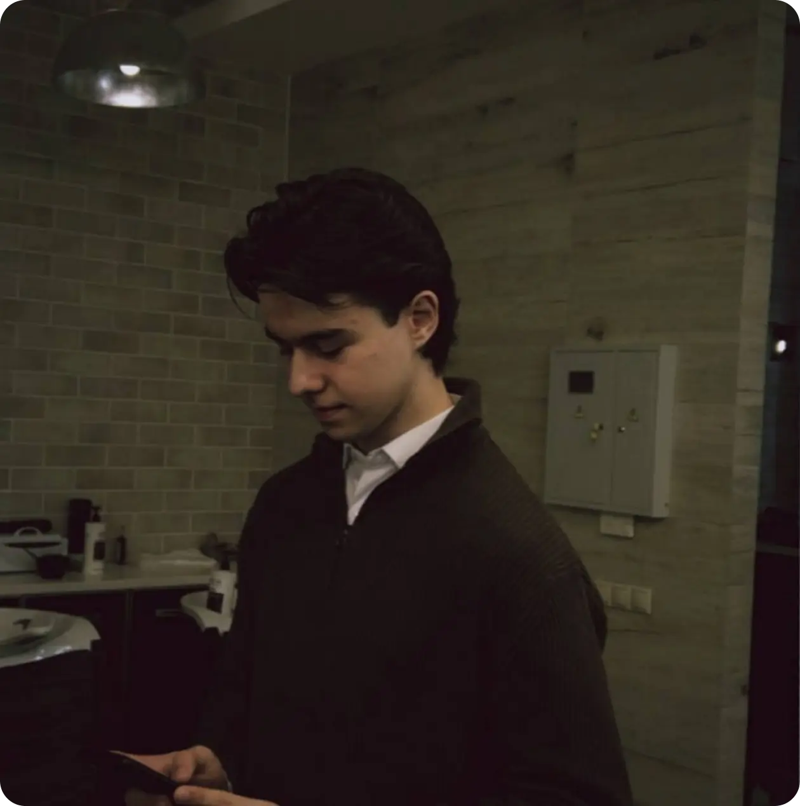
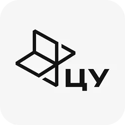

ПРИВЕТСТВУЮ!
Меня зовут Павлов Александр. Начинал с графики и веб-дизайна, сейчас являюсь действующим UX/UI, занимаюсь дизайном сайтов и мобильных приложений
Обсудить проект
Меня зовут Павлов Александр. Начинал с графики и веб-дизайна, сейчас являюсь действующим UX/UI, занимаюсь дизайном сайтов и мобильных приложений
Обсудить проектПомог увеличить аудиторию стартапа Co-Founders Match в несколько раз за 3 месяца, отвечая за UX/UI-дизайн и развитие визуальной коммуникации.
Провёл редизайн Казахстанского супераппа TezBar, переработав пользовательские сценарии, структуру продукта и интерфейс на 70+ экранах.
Разработал дизайн многостраничного сайта для приюта «Верный друг» в рамках финала олимпиады DSGN SENSE.
Призёр II степени олимпиады DSGN SENSE (среди более чем 1700 участников).

Здесь могли
быть вы
Опыт работы в дизайне — 2 года. Начинал с YouTube и видеомонтажа — это научило меня чувствовать визуал и работать в срок.
Коммуникабелен, работаю в связке с командой и продактом (а если его нет — беру его функции на себя).
Помимо дизайна закрываю задачи по видеомонтажу и базовой 3D-графике.
Middle UX/UI Designer
г. Орёл
Расскажите о вашем проекте, и я помогу создать интерфейс, который понравится пользователям.
ДОСТУПЕН ДЛЯ ФРИЛАНСА И ПОЛНОЙ ЗАНЯТОСТИ.